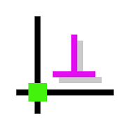

Weeks <<
Previous Next >> Week15-16
Week10-14
Week10
正向pull request與反向pull request之差異
正向 pull request:
指無權限之組員創建New pull request後，將更新資料推送到組別倉儲，再經由有權限組長或組員確認資料無誤後，同意合併。
反向 pull request:
指管理者給於組員權限，使組員擁有合併的權力，但常因組員版本不同，推送易發生衝突。
2015- Space Modeling with SolidWorks and NX 重點整理
資料連結:https://link.springer.com/book/10.1007/978-3-319-03862-9
繪圖軟體介紹
Solvespace
Solvespace功能表說明
Solvespace實作影片

Solidworks
Solidworks開發緣起
Solidworks套件安裝與流程設定
NX
NX開發起源
NX套件安裝與設定流程
Inventor
Inventor開發起源
Inventor套件安裝與設定流程
Creo (Pro/E)
Creo (ProE)開發起源
Creo (ProE)套件安裝與設定流程
各套繪圖軟體之差異及特點分析
Week12
Weeks <<
Previous Next >> Week15-16